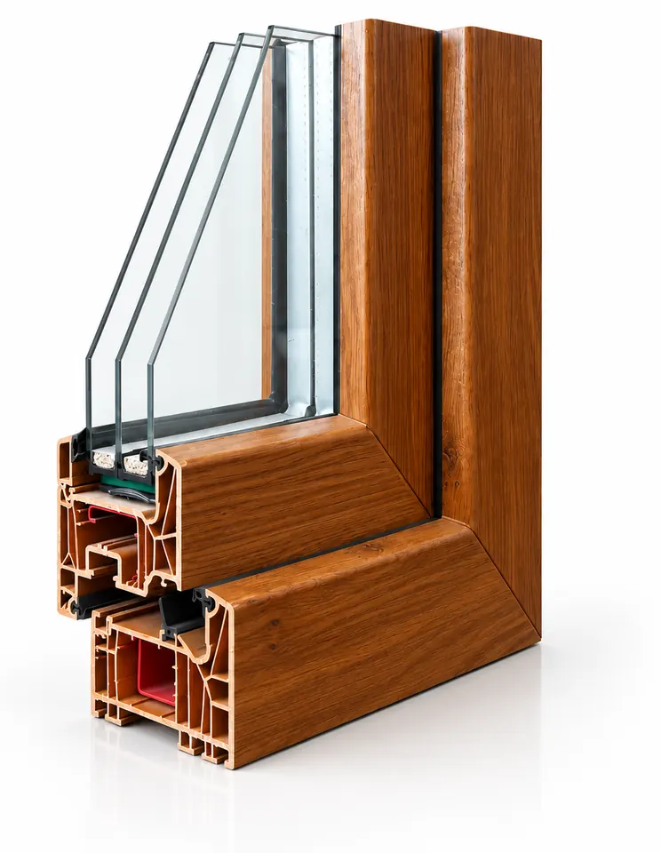

Kunststofffenster (PVC)
Kunststofffenster sind die meistgewählte Lösung – und technisch längst kein Kompromiss mehr. Nachfolgend sehen Sie, welche Werte unsere Systeme erreichen. Welches davon zu Ihrem Objekt passt, klären wir in der Beratung vor Ort.
Warum Kunststoff die meistgewählte Lösung ist
Moderne Kunststofffenster haben mit den Modellen von früher wenig gemein. Mehrkammerprofile mit mehreren umlaufenden Dichtungsebenen erreichen heute Dämmwerte, die vor zwanzig Jahren dem Passivhaus vorbehalten waren – zu einem Preis, der auch den Austausch sämtlicher Fenster eines Hauses wirtschaftlich macht.
- Uw-Wert (je niedriger, desto besser)ab 0,6 W/(m²K)
- Bautiefe70 bis 82 mm, je nach System
- Kammern5 bis 7
- Verglasung2- oder 3-fach
- Schallschutz32 bis 46 dB, je nach Glasaufbau
- Einbruchschutzbis Widerstandsklasse RC2

Was für Kunststofffenster spricht
Sechs Punkte, die im Alltag den Unterschied machen – unabhängig davon, für welches System Sie sich am Ende entscheiden.
Die Oberfläche braucht nur gelegentlich ein feuchtes Tuch. Kein Abschleifen, kein Lackieren, keine wiederkehrenden Kosten über die gesamte Nutzungsdauer.
Für dasselbe Budget erreichen Sie in Kunststoff in der Regel bessere Dämmwerte als in jedem anderen Rahmenmaterial.
Mehrere umlaufende Dichtungsebenen halten auch bei Sturm dicht. Sie merken es daran, dass Fensterbänke trocken bleiben und es nicht mehr zieht.
Pilzkopfverriegelungen gehören zum Standard. Die Aufrüstung bis zur Widerstandsklasse RC2 ist jederzeit möglich – auch nur an den gefährdeten Fenstern.
Durchgefärbte und folierte Oberflächen bleiben über Jahre farbstabil, auch auf der Sonnenseite des Hauses.
Mit Schallschutzverglasung lässt sich der Außenlärm deutlich senken – aus einer befahrenen Straße wird ein Hintergrundgeräusch.
Passt Kunststoff zu Ihrem Vorhaben?
Technisch dämmen heute alle drei Rahmenmaterialien auf hohem Niveau. Der Unterschied liegt woanders – und in manchen Situationen würden wir Ihnen zu einem anderen Material raten.
Ja, wenn …
- Ihre Fenster haben klassische Größen bis etwa 2,50 m Breite
- Mehrere Einheiten werden gleichzeitig getauscht
- Sie möchten die beste Dämmung pro investiertem Euro
- Nachstreichen kommt für Sie nicht infrage
Eher Aluminium, wenn …
- die Öffnung breiter als etwa 2,50 m ist oder das Element sehr schwer wird
- Sie möglichst schmale Rahmen und viel Glasfläche möchten
- es ein Gewerbeobjekt ist oder eine Sonderfarbe nach RAL gewünscht ist
Eher Holz, wenn …
- Sie innen sichtbares Holz möchten
- das Gebäude im Altbau- oder Denkmalumfeld steht
Unsicher? Dann legen Sie sich nicht vorab fest. Beim Aufmaß vor Ort sehen wir Lage, Maße und Einbausituation – und sagen Ihnen, welches Material sich hier wirklich rechnet.
Mit diesen Werten investieren Sie in eine förderfähige Fensterlösung: Die Passivhaus-tauglichen Dämmwerte erfüllen die Mindestanforderungen der Bundesförderung für effiziente Gebäude (BEG) – sowohl als Einzelmaßnahme als auch im Rahmen einer Sanierung zum KfW-Effizienzhaus. Sie profitieren also nicht nur von spürbar geringeren Heizkosten und mehr Wohnkomfort, sondern auch von attraktiven staatlichen Zuschüssen, die Ihre Investition zusätzlich entlasten. Wir prüfen gerne unverbindlich, welche Förderung für Ihr Projekt infrage kommt – mehr dazu auf unserer Förderung-Seite.
Weitere Premium-Profile auf Anfrage
Oben steht, was wir üblicherweise empfehlen. Je nach Anspruch und Budget realisieren wir für Sie auch:
Schlankeres 70-mm-Profil für alle Standardanforderungen zu einem attraktiven Preis.
Bewährte Zwischenlösung mit sehr guten Dämmwerten zum kleineren Budget.
Kunststoff-Aluminium-Fenster mit eleganter Alu-Vorsatzschale und nochmals verbesserten Uw-Werten.
Was Sie über unsere Kunststofffenster wissen sollten
Er gibt an, wie viel Wärme ein Fenster nach draußen durchlässt – Rahmen und Glas zusammengerechnet. Je niedriger die Zahl, desto besser dämmt das Fenster. Zur Einordnung: Ein altes, einfach verglastes Fenster liegt bei etwa 5,0, ein Zweifach-Isolierglas aus den achtziger Jahren bei rund 2,8. Gesetzlich gefordert sind heute höchstens 1,3, für die BAFA-Förderung höchstens 0,95. Unsere Systeme erreichen hier 0,6 W/(m²K). Eine anschauliche Gegenüberstellung finden Sie auf unserer Förderung-Seite.
Entscheidend sind Größe und Anzahl der Elemente, der Glasaufbau, die Farbe (weiß ist günstiger als folierte oder lackierte Ausführungen), die Beschlag- und Sicherheitsausstattung sowie die Einbausituation vor Ort. Pauschalpreise aus dem Internet sagen deshalb wenig aus. Wir messen kostenlos auf und erstellen Ihnen ein verbindliches Festpreisangebot inklusive Montage und Entsorgung der Altelemente.
Mit der serienmäßigen Dreifachverglasung liegt die Schalldämmung je nach Glasaufbau bei etwa 32 bis 35 dB. Wohnen Sie an einer stark befahrenen Straße, an einer Bahnstrecke oder in einer Einflugschneise, lässt sich mit spezieller Schallschutzverglasung ein Wert von bis zu 46 dB erreichen. Wir schauen uns Ihre Lage an und empfehlen den passenden Aufbau.
Ja. Das BAFA bezuschusst den Fenstertausch im Rahmen der BEG-Einzelmaßnahmen mit 15 % der förderfähigen Kosten, sofern das eingebaute Fenster einen Uw-Wert von höchstens 0,95 W/(m²K) erreicht. Unsere Kunststofffenster erreichen Werte bis 0,6 W/(m²K) und liegen damit deutlich darunter. Um die Förderung kümmern wir uns: Sie unterschreiben einen Leistungsvertrag, der erst mit der Förderzusage wirksam wird – genau so verlangt es das BAFA bei Antragstellung. Den Antrag bereiten wir vor und reichen ihn mit Ihrer Vollmacht ein. Wie das abläuft, steht auf unserer Förderung-Seite.
Nach dem Aufmaß und der Auftragsbestätigung dauert die Fertigung bei PVC-Elementen rund zwei Wochen. Den Montagetermin stimmen wir direkt mit Ihnen ab. Bei größeren Objekten planen wir die Montage bauabschnittsweise, damit Ihr Betrieb oder Ihre Mieter möglichst wenig beeinträchtigt werden.
Serienmäßig kommt ein Dreifach-Glaspaket im Aufbau 4/18/4/18/4 zum Einsatz. Mit emissionsarmen Beschichtungen erreicht die Verglasung einen Ug-Wert von bis zu 0,5 W/(m²K) – das ist der Wert der Glasfläche selbst, unabhängig vom Rahmen.
Gering. Die Rahmen genügt es, gelegentlich mit mildem Reiniger feucht abzuwischen. Einmal im Jahr sollten die Beschläge geölt und die Dichtungen mit einem Pflegemittel behandelt werden – dann bleiben sie dauerhaft geschmeidig. Diese Wartung übernehmen wir auf Wunsch im Rahmen unseres Kundendienstes.
Kunststofffenster für Ihr Projekt anfragen
Ob Einzelfenster oder komplette Fassade – wir beraten Sie unverbindlich zu Kunststofffenstern. Wir kommen für das Aufmaß zu Ihnen nach Isernhagen, Hannover oder in eine der umliegenden Gemeinden.
Angebot anfragen